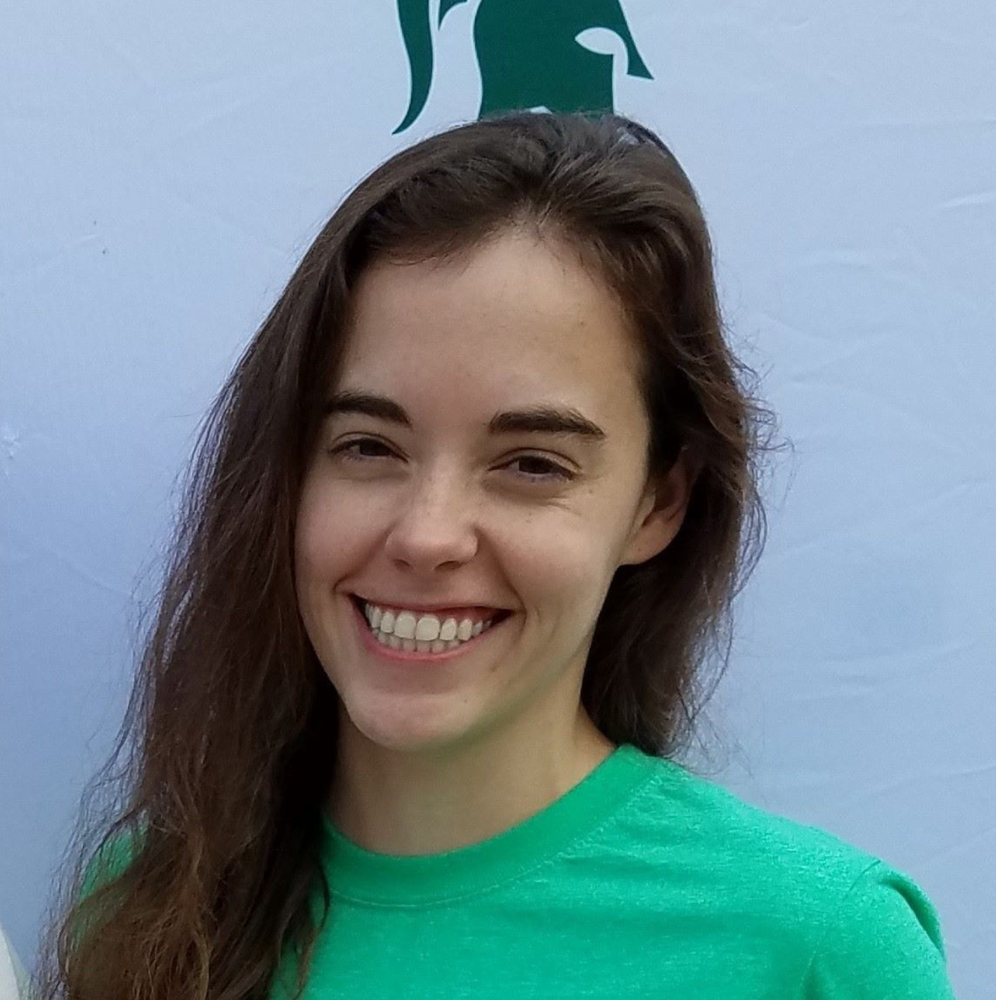

Dr. Kathryn Paris Kohn
- Aspiring Academic Librarian - Newly Minted Ph.D. - Book Lover - Alumnus of MSU and Pitt - Cat Person -
Academic Librarianship
I'm currently pursuing an MLIS at Wayne State University. As an academic librarian, I look forward to using my experiences conducting research, teaching, and collaborating across disciplinary boundaries to help students and faculty find the information necessary to further their academic pursuits. This includes fostering their development of skills to better understand and acquire information for themselves.
Chemistry Education Research
For my doctoral dissertation, I explored undergraduate students' perceptions of the relationship between their general chemistry course sequence and introductory cell and molecular biology course. To this end, I conducted three qualitative studies focusing on the concepts of energy and the relationship between structure, properties, and function. For more information about this work, please visit my research page.
![Titled: Big Ideas for Introductory Chemistry and Biology. The left figure shows four interlocking circles labeled Bonding and Interactions, Structure and Properties, Energy, and Stability and Change surrounding a fifth circle labeled CLUE. The right figure shows seven interlocking circles labeled Chemical and Physical Basis of Life, Matter and Energy, Cellular Basis of Life, Cells are Systems, Structure Determines Function, Information Flow, Exchange, and Storage, and Evolution Drives the Diversity and Unity of Life surrounding an eighth circle labeled Molecular Biology of the Cell.](images/chem-bio.png)